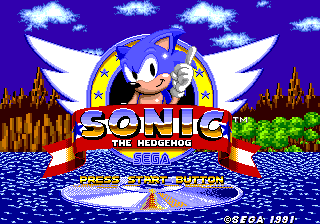
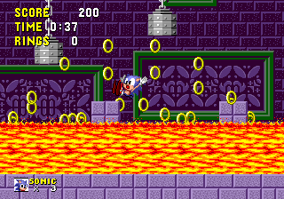
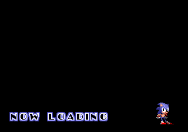
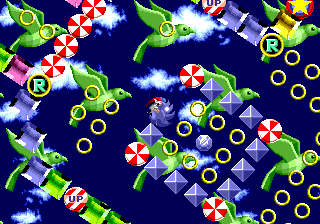

Sonic 1 Mega CD Port

For the 2024 Sonic Hacking Contest, I made a port of Sonic 1 for Mega Drive to the Sega Mega CD, an often-overlooked hardware addon for the console. I worked on it over the course of about two months, as a way for me to learn new hardware and to give an example for others to work off of for developing their own games for it. There are a few notable things about this project:
- This runs in Mega CD Mode 2, which means there's no ROM cartridge involved. All data is read and loaded from a CD.
- There is a minimal "sound driver" running on the Mega CD that cooperates with the Mega Drive to play sequenced drum samples
- This project is open source, unlike most previous projects bringing Sonic gameplay to Mega CD.
Due to the new storage format, many changes had to be made to fit everything. With no ROM area to work with, you lose the 512kb of space the game would otherwise fit into (and the other 3.5mb of space you could use to store new data statically). Instead, you have to divvy up your data between:
- "Work RAM" (64kb), the RAM area of the Mega Drive
- "PRG RAM" (512kb), the working memory area of the Mega CD specifically
- "Word RAM" (256kb), a memory area offered by the Mega CD that can be shared between it and the Mega Drive with a memory-mapped register

PRG RAM is an attractive option for moving things into, but the Mega CD can't easily access the Mega Drive's video hardware (the VDP chip). Mega CD's processor is a Motorola 68000 (same as Mega Drive's) running at a higher clock speed, so game code could absolutely be run on it, but you quickly run into design problems of how to coordinate interaction with the VDP. Given the deadline I had, I decided the better option would be to mimic the way Sonic CD (a classic Sonic game originally developed for Mega CD) handles its normal levels.
I set up a system where a set of "kernel" programs, running on the Mega Drive and Mega CD simultaneously, cooperate to load in levels to Word RAM as nearly-standalone code modules that the Mega Drive then executes. Fitting each level into Word RAM required trimming a lot of unnecessary data from Sonic 1's assembly code, and making heavy use of assembler directives to selectively include relevant parts of code and data, sometimes aligned to expected memory addresses.

This port also features notable sound modifications. The biggest draw of using a CD as a medium of storage is the possibility of streaming high-quality audio. While I was not able to set that up in the time I had, I did manage to set up playback of drum samples on the Mega CD, replacing the Mega Drive's PCM playback. I converted the raw waveform data from the format used by the original game's sound engine, to a format directly usable by the Mega CD's onboard audio chip. Then, in the kernel, I recieve signals from the Mega Drive to play certain samples where appropriate. I hope to expand on this further in future releases.

I'm excited for what this project can do for the future of homebrew on the Mega CD. It's not a terribly well-documented piece of hardware, but its potential definitely opens up a lot of possibilities for how to expand existing Mega Drive games.